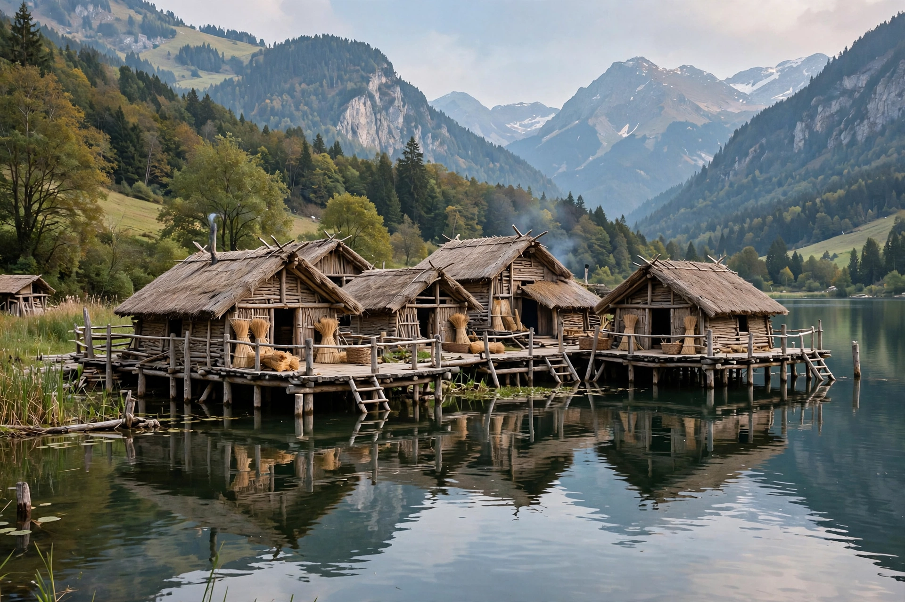

| UNESCO World Heritage Site | |
|---|---|
| Location | Austria, France, Germany, Italy, Slovenia, Switzerland |
| Sites | 111 |
| Inscribed | 2011 |
| Period | c. 5000–500 BC |

Prehistoric pile dwellings around the Alps are a series of 111 prehistoric stilt-house settlements in and around the Alps, built from around 5000 to 500 BC on the edges of lakes, rivers and wetlands. They were inscribed as a UNESCO World Heritage Site in 2011.
The sites came to attention in the winter of 1853–54, when low water levels in Lake Zurich exposed wooden piles and artefacts. Archaeologist Ferdinand Keller popularised the idea of villages built on platforms over water, though later research suggests many stood on marshy shores.
Waterlogged conditions preserved wood, textiles, plant remains and tools exceptionally well, giving an unusually detailed picture of Neolithic and Bronze Age farming life in Europe — crops, livestock, trade and craft. Only a small fraction of the known sites were selected for inscription.
More than half the listed sites are in Switzerland, with the remainder in Germany, Italy, France, Austria and Slovenia.